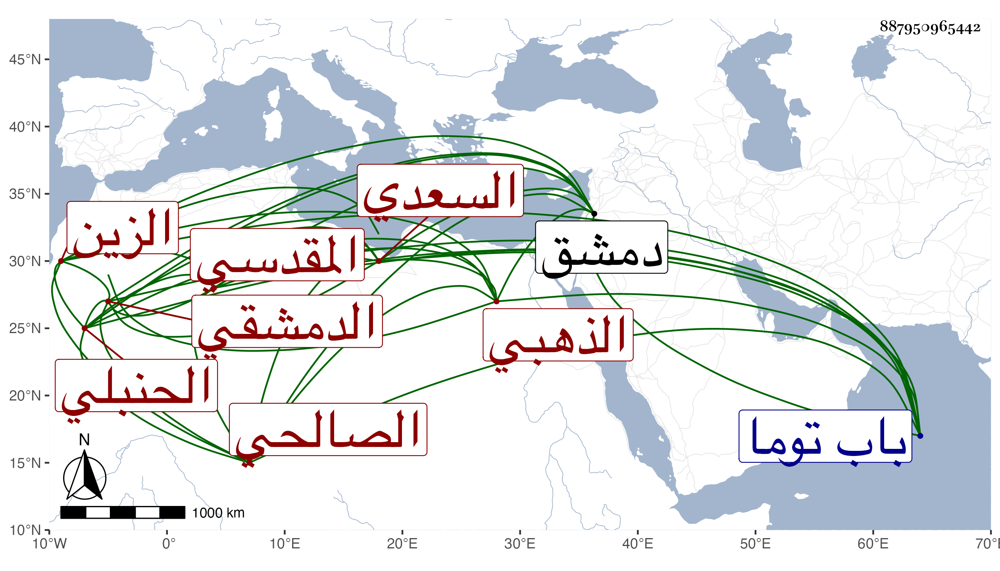

0902Sakhawi.DawLamic.ITO20230111-ara1.EIS1600.887950965442
Biography ID: 887950965442
442
عبد الرحيم بن أحمد بن محمد بن أحمد بن المحب عبد الله بن أحمد بن محمد بن إبراهيم بن أحمد بن عبد الرحمن بن إسماعيل بن منصور بن عبد الرحمن الزين السعدي المقدسي الأصل الدمشقي الصالحي الحنبلي الذهبي أبوه بالدهيشة من دمشق ويعرف كسلفه بابن المحب وهو ابن أخي الشمس محمد بن محمد بن أحمد الآتي وجده هو عم الحافظ أبي بكر محمد بن عبد الله بن أحمد بن المحب الصامت . ولد في صفر سنة ثمان وستين وسبعمائة وسمع على الصلاح بن أبي عمر مسند النساء من مسند أحمد وغالب مسند عائشة منه والفوت من أوله وعلى زينب ابنة قاسم ابن العجمي ما في مشيخة الفخر من جزء الأنصاري وغير ذلك عليهما وعلى قريبيه المذكورين ، وحدث سمع منه الفضلاء ، وذكره شيخنا في معجمه فقال : أجاز لنا في سنة تسع وعشرين . قلت مات في سنة أربعين ، ودفن بمقبرة باب توما رحمه الله وإيانا .
